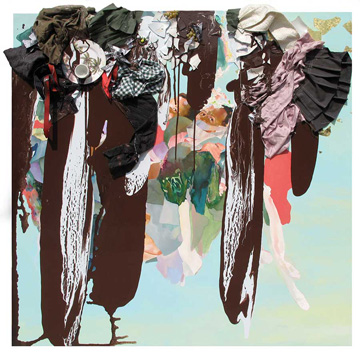
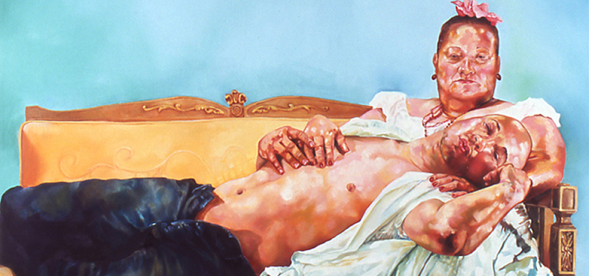

1230 5th Ave,
New York, NY 10029
12.22.15 — 12.4.16
Figure and Form:
Recent Acquisitions
to the Permanent Collection
This exhibition features a selection
of recent acquisitions to El Museo’s
permanent collection.

It includes
our most recent gift,
a large painting by David Antonio Cruz,
Puerto Rican Pieta,
a portrait
of the artist and his mother.

Works of photography, prints,
sculpture, and ceramics accompany
paintings in this multi-media
exhibition that highlights
the iconic presence of the human
form in various ways. Quiet moments
of (self) reflection are seen
as are individual statements
about the possibilities of a
particular material, such as wood,
ceramics, or the photograph.
06.14.16 — 11.26.16
Antonio Lopez: Future Funk Fashion